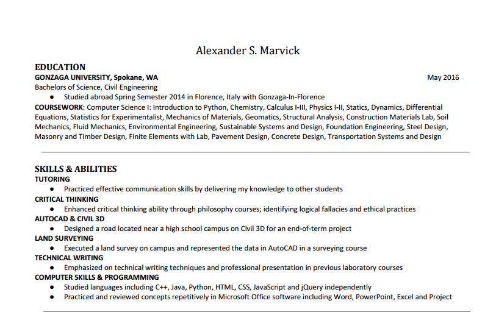
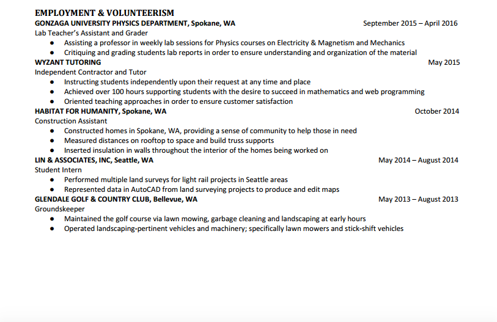

Shown below is a visual copy of my resume. Some important contact information was omitted intentionally; if you would like to contact me directly, please do so by using any of the contact links on the bottom of the page, or click on the 'Get in touch' tab.
 If you would like to open up a downloadable PDF version, you may do so by clicking here.
Alternatively, you can find my LinkedIn profile by clicking on the link at the bottom of the page.
Furthermore, because I update my resume somewhat frequently and don't always update it here (please note 'Last Revised'), send me a message if you would like to review it and I will forward it your way.